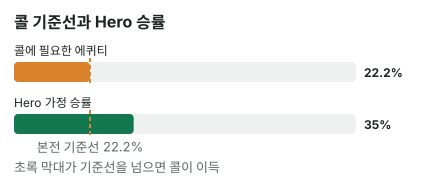

안녕하세요. 오늘은 프리플랍, 그중에서도 BB(빅 블라인드) 자리에서 만나는 장면이에요.
버튼이 아주 작게, 딱 2BB로 레이즈했어요. 이런 레이즈를 미니레이즈라고 해요. Hero 손에는 K7, 좋다고 하기엔 애매한 핸드죠. BB에는 다른 자리에 없는 특별한 사정이 하나 있는데, 그걸 계산에 넣으면 답이 꽤 달라져요. 처음부터 따라가 볼게요.
이 글에서 배울 것
- BB는 이미 1BB를 냈다는 점을 넣어, "더 낼 돈"으로 필요 에퀴티를 구하는 법
- 미니레이즈의 기준선 22.2%가 왜 이렇게 낮은지, "9번 중 2번"으로 직접 따져 보기
- 프리플랍 콜의 계산이 "이번 결정만"의 기준인 이유와, 그래서 기준선보다 여유가 필요한 이유
오늘의 핸드
Hero (BB 자리 · 스택 100BB)


K♦7♣는 무늬가 다른 K7(오프수트)이에요. 같은 무늬라면 플러시 가능성 때문에 승률이 조금 다를 수 있어요.
프리플랍
SB 0.5BB, Hero(BB) 1BB를 블라인드로 냄 → 상대(BTN) 2BB 레이즈(미니레이즈) → SB 폴드 → Hero는 콜? 폴드?
지금 팟은 SB 0.5BB + Hero 1BB + 상대 2BB = 3.5BB예요.
먼저 단위 하나만 짚을게요. 금액에 붙는 BB는 "빅 블라인드 몇 개만큼"이라는 단위예요. 자리 이름 BB와 글자가 같아서 헷갈리는데, "BB 자리가 1BB를 냈다"는 "빅 블라인드 자리가 빅 블라인드 한 개만큼 냈다"는 뜻이에요. 블라인드를 누가 얼마 내는지는 B11에서 봤죠.
결론부터 말할게요. 오늘 가정에서는 이번 프리플랍 결정만 보면 콜이 이득입니다.
남은 베팅이 있어 실제 결과는 달라질 수 있어요. 그래서 오늘은 콜로 평균 얼마를 벌지(평균 손익, EV라는 이름은 B24에서 배워요) 대신 에퀴티 vs 필요 에퀴티로만 판정해요.
플랍부터 또 결정이 이어지니, 그 이야기는 아래 '왜 그럴까'와 질문 절에서 따로 볼게요.
1단계. 콜하려면 몇 번 이겨야 하나 (필요 에퀴티)
용어 한 줄
필요 에퀴티는 "콜해서 본전이 되려면 최소한 이만큼은 이겨야 한다"는 확률이에요. 에퀴티는 이 팟에서 이길 확률이고요.
BB는 이미 1BB를 냈어요
BB 자리의 특별한 점이 이거예요. Hero는 카드를 받기도 전에 블라인드로 1BB를 냈어요. 상대가 2BB를 걸었으니, 따라가려면 2BB를 맞춰야 하는데 그중 1BB는 이미 들어가 있죠. 그래서 Hero가 더 낼 돈은 1BB뿐이에요.
비유하면 팟에 이미 깔린 3.5BB를 1BB 내고 노리는 복권이에요. 당첨금은 이미 테이블 위에 쌓여 있고, Hero가 새로 내는 건 복권값 1BB뿐이죠.
"내가 낸 1BB도 버는 거예요?"
콜해서 이기면 Hero는 지금 팟 3.5BB를 순수하게 더 가져와요. "그 안에 내 1BB도 있는데 왜 버는 돈이에요?" 하실 수 있어요.
이미 낸 1BB는 팟에 들어간 순간 더 이상 Hero 것이 아니에요. 지금 폴드하면 그 1BB는 그대로 상대에게 가요. 그러니 지금 결정에서 따질 건 이번에 더 낼 1BB와, 그걸로 가져올 수 있는 3.5BB뿐이에요.
9번 중 2번이면 본전
우리가 낼 돈 : 이기면 얻는 돈을 보면 1 : 3.5, 곧 2 : 7이에요. "2번 이기는 동안 7번 져도 본전"이라는 뜻이에요.
- 2번 이김: 3.5BB × 2 → 7BB 벌어요
- 7번 짐: 1BB × 7 → 7BB 잃어요
번 돈과 잃은 돈이 같죠. 그래서 2 + 7 = 9번 중 2번이 본전이에요.
공식으로 한 줄에
B06에서 배운 공식, 낼 돈 ÷ 콜한 뒤 전체 팟으로 쓰면 이래요.
필요 에퀴티 = 1(Hero가 더 낼 돈) ÷ (3.5(지금 팟) + 1(Hero 콜)) = 1 ÷ 4.5 = 22.2%
2단계. 오늘의 가정 — Hero가 이길 확률
프리플랍 승률은 "끝까지 갔을 때의 몫"
리버 콜 글들에서는 카드가 다 나와 있었죠. 프리플랍은 아직 보드가 한 장도 없어요. 그래서 여기서 말하는 승률은 "플랍부터 리버까지 다 깔고 쇼다운(B01에서 배웠죠)했을 때 Hero가 이길 확률"이에요.
35%라는 가정
버튼에서 미니레이즈를 하는 상대는 A나 K가 들어간 높은 핸드, 크고 작은 포켓페어, 연결된 카드처럼 여러 핸드로 레이즈할 수 있어요. 오늘은 그런 상대를 만났을 때 K7이 끝까지 갔을 때 이길 확률을 35%라고 가정할게요.
K7이 이 상대 핸드들 사이에서 어느 쪽인지 빠짐없이 나눠 볼게요.
- K7이 앞서는 핸드: K도 A도 없고 페어도 아닌 핸드(예: Q8, J9, 65). 7보다 높은 카드가 있어도 K가 더 높아서 앞서요
- K7이 뒤지는 핸드: 22부터 AA까지 모든 포켓페어(22~66처럼 작은 페어도 이미 페어라 앞서요), A가 든 핸드(A2도 A가 K보다 높아요), 키커가 더 높은 K(KQ·KJ·KT·K9·K8, K가 맞아도 키커로 져요)
버튼이 레이즈하는 핸드에는 뒤쪽 묶음이 꽤 들어 있어서, 둘을 섞은 평균이 절반에 못 미치는 35%라고 보는 거예요. 상대 핸드를 하나하나 세어 구하는 법은 중급 I06에서 배워요.
3단계. 나란히 놓고 비교하기
B14에서 연습한 그 비교예요.
| 확률 | |
|---|---|
| 콜에 필요한 에퀴티 | 22.2% |
| Hero 가정 승률 | 35% |

35% > 22.2%. 이번 결정만 보면 콜이에요.
왜 그럴까: BB의 기준선은 왜 이렇게 낮고, 그런데도 왜 여유가 필요할까?
팟에 이미 돈이 많아서 싸요
기준선이 낮은 이유는 팟에 이미 들어간 돈이에요. SB가 낸 0.5BB, Hero가 낸 1BB, 상대 레이즈 2BB가 모두 팟에 있어요. 그에 비해 Hero가 더 낼 돈은 1BB뿐이죠.
BB가 아닌 자리에서 같은 2BB 레이즈를 따라가려면 2BB를 처음부터 다 내야 해요. 이길 때 받는 돈은 비슷한데 내는 돈이 두 배라, 기준선이 훨씬 높아져요. BB가 싸게 들어가는 건 이미 낸 블라인드가 팟에 깔려 있기 때문이에요.
22.2%는 "끝까지 다 가져갈 때"의 기준선이에요
그런데 이 22.2%에는 조건이 하나 숨어 있어요. 35%를 리버까지 다 가져간다는 조건이요.
실제로는 플랍·턴·리버에 상대가 또 벳할 수 있어요. 그리고 BB는 플랍부터 상대보다 먼저 말해야 해요. 상대가 어떻게 할지 모르는 채로 먼저 결정해야 하죠(이 차이는 B04에서 다뤄요).
예를 들어 플랍이 Q♠ 9♥ 4♦처럼 K도 7도 안 맞게 깔렸다고 해 볼게요. Hero가 체크하자 상대가 벳했어요. 아무것도 안 맞은 K7로는 접기 쉽죠. 그러면 리버까지 갔다면 이겼을 판도 이 판에서는 못 가져와요.
그래서 여유분이 필요해요
결국 프리플랍 승률 35%를 판에서 다 돈으로 바꾸지 못할 수 있어요. 이렇게 계산한 승률을 실제로 다 못 가져가는 이야기는 중급 I31에서 배워요.
그러니 승률과 기준선의 차이가 넉넉할수록 안심하고 콜할 수 있어요. 오늘 K7은 35%와 22.2% 사이에 여유가 꽤 있어요. 반대로 기준선을 아슬아슬하게 넘는 핸드는, 뒤에서 손해 보는 몫을 생각하면 콜이 이득이라고 말하기 어려워요.
자주 하는 실수
실수 1. "이미 1BB 냈으니 아까워서 콜" 기준선이 낮아지는 건 맞지만, 이유가 다르면 판단도 틀려요. 1BB가 기준선을 낮추는 건 "내 돈이라서"가 아니라 "팟에 들어간 돈이라서"예요. 아깝다는 마음으로 콜하면, 승률이 22.2%에 못 미치는 핸드까지 따라가게 돼요. 대신 이미 낸 돈은 팟의 일부로만 세고, 승률과 기준선만 비교해요.
실수 2. 벳 크기별 표를 그대로 쓰기 벳 크기별 필요 에퀴티 표는 상대 벳과 우리 콜이 같은 금액일 때 만든 표예요. 오늘 Hero는 상대가 건 2BB 중 1BB만 더 내요. 상대 레이즈 2BB를 그대로 "우리가 낼 돈"으로 넣으면 기준선을 실제보다 훨씬 높게 잡아서, 이득인 콜을 버리게 돼요. 대신 BB에서는 언제나 "더 낼 돈"을 먼저 구해요.
실수 3. 지금 팟에서 SB의 0.5BB를 빼먹기 "Hero 1BB와 상대 2BB"만 세면 지금 팟이 3BB처럼 보여요. 하지만 SB가 폴드해도 SB가 낸 0.5BB는 팟에 남아요. 이걸 빼면 분모가 작아져 기준선이 실제보다 올라가요. 대신 지금 팟은 블라인드 둘 + 상대 레이즈, 오늘은 0.5 + 1 + 2 = 3.5BB로 세요.
"그럼 SB에서 같은 미니레이즈를 맞으면요?"
좋은 질문이에요. 자리만 바꿔 보면 BB의 특별함이 더 잘 보여요.
SB는 블라인드로 0.5BB만 냈어요. 같은 2BB 레이즈를 따라가려면 더 낼 돈이 1.5BB로, BB보다 커지죠. 게다가 SB 뒤에는 아직 BB가 남아 있어서, 콜해도 BB가 레이즈할 수 있어요.
그래서 같은 레이즈라도 SB의 기준선은 BB보다 높고, 판이 거기서 끝난다는 보장도 없어요. 이미 낸 블라인드가 클수록, 뒤에 남은 사람이 없을수록 싸게 들어가는 거예요. BB는 그 두 가지를 다 가진 자리예요.
숫자가 뒤집히는 지점
기준은 두 가지예요.
- 상대 레이즈 크기가 바뀌면: Hero가 더 낼 돈과 지금 팟이 같이 바뀌어 필요 에퀴티를 다시 구해요. 그 값이 Hero 승률(35%)보다 높아지면 폴드, 낮으면 콜
- Hero 승률이 바뀌면: 지금 필요 에퀴티(22.2%)보다 높은지 낮은지만 보면 돼요
선생님의 한마디
BB에서 레이즈를 맞으면 이 순서로 해요.
- 레이즈가 나오면 칩을 만지기 전에 "더 낼 돈"을 소리 없이 한 번 말해 보기
- 콜하기로 했다면, 플랍에 무엇이 맞으면 계속 가고 무엇이면 접을지를 미리 정해 두기
연습 문제 (같은 자리, 같은 Hero 핸드)
홀덤학습 에퀴티 계산기에서 내 카드를 고른 뒤 [콜 수익] 칸에 지금 팟(상대 벳 포함)과 콜 금액을 넣으면 필요 에퀴티가 나와요(콜 금액 칸에는 "더 낼 돈").
문제 1. 상대가 3BB로 레이즈했다면? Hero 가정 승률은 그대로 35%.
정답 보기
지금 팟 = 0.5 + 1 + 3 = 4.5BB, Hero가 더 낼 돈 = 3 − 1 = 2BB. 필요 에퀴티 = 2 ÷ (4.5 + 2) = 2 ÷ 6.5 = 30.8% → 35%가 더 커서 콜. 다만 미니레이즈 때보다 기준선이 올라가 여유가 줄었어요. 플랍부터 먼저 말하는 불리함을 생각하면 아슬아슬한 콜이에요.
문제 2. 상대가 2.5BB로 레이즈했고, 이번엔 Hero 핸드가 더 약해서 가정 승률이 25%예요. 콜? 폴드?
정답 보기
지금 팟 = 0.5 + 1 + 2.5 = 4BB, Hero가 더 낼 돈 = 2.5 − 1 = 1.5BB. 필요 에퀴티 = 1.5 ÷ (4 + 1.5) = 1.5 ÷ 5.5 = 27.3% → 25%가 모자라서 폴드. 레이즈가 조금만 커져도 더 낼 돈이 늘어 기준선이 올라가요. 이미 낸 1BB가 있어도, 끝까지 다 가져간다는 조건에서조차 기준선에 못 미쳐요.
핵심 정리
- BB의 필요 에퀴티 = 더 낼 돈 ÷ (지금 팟 + 더 낼 돈). 이미 낸 블라인드는 팟의 일부예요
- 미니레이즈면 낼 돈 : 얻는 돈 = 1 : 3.5, 기준선은 9번 중 2번(22.2%)
- 기준선이 낮은 건 팟에 이미 돈이 깔려 있어서지, 내 돈이 아까워서가 아니에요
- 프리플랍 기준선은 승률을 끝까지 다 가져갈 때의 값이라, 플랍부터 먼저 말하는 BB는 여유가 필요해요
정리하며
오늘은 BB에서 미니레이즈를 맞은 K7로 콜할지 정했어요.
이미 낸 1BB 덕분에 Hero가 더 낼 돈은 1BB뿐이었고, 1 : 3.5에서 기준선 22.2%(9번 중 2번)가 나왔죠. 가정 승률 35%가 그보다 높아서, 이번 결정만 보면 콜이에요. 다만 BB는 플랍부터 먼저 말해야 해서 35%를 다 가져가기 어렵다는 것, 그래서 기준선보다 넉넉한 여유가 필요하다는 것까지 봤어요.
다음에 BB에서 레이즈를 맞으면, 이미 낸 블라인드는 팟의 일부로만 세고 더 낼 돈부터 구해 보세요.
다음 글 B20에서는 반대로 우리가 먼저 판에 들어가는 방법을 봐요. 레이즈 대신 1BB만 맞춰 들어가는 오픈 림프가 왜 나쁜 습관인지 다뤄요.
AI 작성 · 숫자는 계산 검증 · 가정 승률 기준 · 이번 한 번의 결정 기준(플랍 이후 액션은 계산에 넣지 않음)